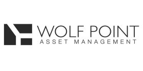

I've had lots of experience working in financial settings, and after graduation I'll be in New York City working at Citi in Sales and Trading . Some of the professional work experience I've had includes:
 |
Citi |
| I interned at Citi the summer after my third year, and I'm fortunate enough to return this year after graduation. During my internship in Chicago, I rotated through three sales desks, while conducting daily market analysis, and reports. | |
|  | Wolf Point Asset Management |
| After my third year, I interned at two companies consecutively. At Wolf Point Asset Management, I worked closely with the firm's Managing Partners to develop models used to prepare two new fund investments of $10 million. | |
| Metropolitan Capital | |
| The second internship I had after my third year was at Metropolitan Capital, where I analyzed loan applications and prepared documentation for new loans totaling $6 million. |